GeneralizedParetoFactory¶
(Source code, png, hires.png, pdf)
{kind=link}
{kind=link}
-
class
GeneralizedParetoFactory(*args)¶ Generalized Pareto factory.
- Available constructor:
- GeneralizedParetoFactory()
See also
Notes
OpenTURNS proposes several estimators to build a GeneralizedPareto distribution from a scalar sample (see [matthys2003] for the theory).
Moments based estimator:
Lets denote:
 the empirical
mean of the sample,
the empirical
mean of the sample,- 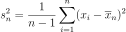 its empirical variance,
Then we estimate 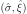 using:
(1)¶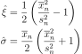
this estimator is well-defined only if 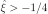, otherwise the second moment does not exist.
Probability weighted moments based estimator:
Lets denote:
- 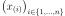 the sample sorted in ascending order
- 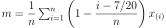
- 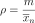
Then we estimate using:
(2)¶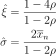
this estimator is well-defined only if 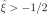, otherwise the first moment does not exist.
Exponential regression based estimator:
Lets denote:
- 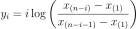 for 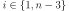
Then we estimate using:
(3)¶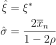
Where 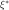 maximizes:
(4)¶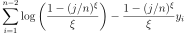
under the constraint 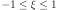.
Attributes: thisownThe membership flag
Methods
build(*args)Build the distribution. buildAsGeneralizedPareto(*args)Build the distribution as a GeneralizedPareto type. buildEstimator(*args)Build the distribution and the parameter distribution. buildMethodOfExponentialRegression(sample)Build the distribution based on the exponential regression estimator. buildMethodOfMoments(sample)Build the distribution based on the method of moments estimator. buildMethodOfProbabilityWeightedMoments(sample)Build the distribution based on the probability weighted moments estimator. getBootstrapSize()Accessor to the bootstrap size. getClassName()Accessor to the object’s name. getId()Accessor to the object’s id. getName()Accessor to the object’s name. getOptimizationAlgorithm()Accessor to the solver. getShadowedId()Accessor to the object’s shadowed id. getVisibility()Accessor to the object’s visibility state. hasName()Test if the object is named. hasVisibleName()Test if the object has a distinguishable name. setBootstrapSize(bootstrapSize)Accessor to the bootstrap size. setName(name)Accessor to the object’s name. setOptimizationAlgorithm(solver)Accessor to the solver. setShadowedId(id)Accessor to the object’s shadowed id. setVisibility(visible)Accessor to the object’s visibility state. -
__init__(*args)¶ Initialize self. See help(type(self)) for accurate signature.
-
build(*args)¶ Build the distribution.
Available usages:
build()
build(sample)
build(param)
Parameters: - sample : 2-d sequence of float, of dimension 1
The sample from which the distribution parameters are estimated.
- param : Collection of
PointWithDescription A vector of parameters of the distribution.
Notes
In the first usage, the default
GeneralizedParetodistribution is built.In the second usage, the parameters are evaluated according the following strategy:
- If the sample size is less or equal to GeneralizedParetoFactory-SmallSize from
ResourceMap, then the method of probability weighted moments is used. If it fails, the method of exponential regression is used. - Otherwise, the first method tried is the method of exponential regression, then the method of probability weighted moments if the first one fails.
In the fourth usage, a
GeneralizedParetodistribution corresponding to the given parameters is built.
-
buildAsGeneralizedPareto(*args)¶ Build the distribution as a GeneralizedPareto type.
Available usages:
build()
build(sample)
build(param)
Parameters: - sample : 2-d sequence of float, of dimension 1
The sample from which the distribution parameters are estimated.
- param : sequence of float
A vector of parameters of the distribution.
-
buildEstimator(*args)¶ Build the distribution and the parameter distribution.
Parameters: - sample : 2-d sequence of float
Sample from which the distribution parameters are estimated.
- parameters :
DistributionParameters Optional, the parametrization.
Returns: - resDist :
DistributionFactoryResult The results.
Notes
According to the way the native parameters of the distribution are estimated, the parameters distribution differs:
- Moments method: the asymptotic parameters distribution is normal and estimated by Bootstrap on the initial data;
- Maximum likelihood method with a regular model: the asymptotic parameters distribution is normal and its covariance matrix is the inverse Fisher information matrix;
- Other methods: the asymptotic parameters distribution is estimated by Bootstrap on the initial data and kernel fitting (see
KernelSmoothing).
If another set of parameters is specified, the native parameters distribution is first estimated and the new distribution is determined from it:
- if the native parameters distribution is normal and the transformation regular at the estimated parameters values: the asymptotic parameters distribution is normal and its covariance matrix determined from the inverse Fisher information matrix of the native parameters and the transformation;
- in the other cases, the asymptotic parameters distribution is estimated by Bootstrap on the initial data and kernel fitting.
Examples
Create a sample from a Beta distribution:
>>> import openturns as ot >>> sample = ot.Beta().getSample(10) >>> ot.ResourceMap.SetAsUnsignedInteger('DistributionFactory-DefaultBootstrapSize', 100)
Fit a Beta distribution in the native parameters and create a
DistributionFactory:>>> fittedRes = ot.BetaFactory().buildEstimator(sample)
Fit a Beta distribution in the alternative parametrization
 :
:>>> fittedRes2 = ot.BetaFactory().buildEstimator(sample, ot.BetaMuSigma())
-
buildMethodOfExponentialRegression(sample)¶ Build the distribution based on the exponential regression estimator.
Parameters: - sample : 2-d sequence of float, of dimension 1
The sample from which the distribution parameters are estimated.
-
buildMethodOfMoments(sample)¶ Build the distribution based on the method of moments estimator.
Parameters: - sample : 2-d sequence of float, of dimension 1
The sample from which the distribution parameters are estimated.
-
buildMethodOfProbabilityWeightedMoments(sample)¶ Build the distribution based on the probability weighted moments estimator.
Parameters: - sample : 2-d sequence of float, of dimension 1
The sample from which the distribution parameters are estimated.
-
getBootstrapSize()¶ Accessor to the bootstrap size.
Returns: - size : integer
Size of the bootstrap.
-
getClassName()¶ Accessor to the object’s name.
Returns: - class_name : str
The object class name (object.__class__.__name__).
-
getId()¶ Accessor to the object’s id.
Returns: - id : int
Internal unique identifier.
-
getName()¶ Accessor to the object’s name.
Returns: - name : str
The name of the object.
-
getOptimizationAlgorithm()¶ Accessor to the solver.
Returns: - solver :
OptimizationAlgorithm The solver used for numerical optimization of the likelihood.
- solver :
-
getShadowedId()¶ Accessor to the object’s shadowed id.
Returns: - id : int
Internal unique identifier.
-
getVisibility()¶ Accessor to the object’s visibility state.
Returns: - visible : bool
Visibility flag.
-
hasName()¶ Test if the object is named.
Returns: - hasName : bool
True if the name is not empty.
-
hasVisibleName()¶ Test if the object has a distinguishable name.
Returns: - hasVisibleName : bool
True if the name is not empty and not the default one.
-
setBootstrapSize(bootstrapSize)¶ Accessor to the bootstrap size.
Parameters: - size : integer
Size of the bootstrap.
-
setName(name)¶ Accessor to the object’s name.
Parameters: - name : str
The name of the object.
-
setOptimizationAlgorithm(solver)¶ Accessor to the solver.
Parameters: - solver :
OptimizationAlgorithm The solver used for numerical optimization of the likelihood.
- solver :
-
setShadowedId(id)¶ Accessor to the object’s shadowed id.
Parameters: - id : int
Internal unique identifier.
-
setVisibility(visible)¶ Accessor to the object’s visibility state.
Parameters: - visible : bool
Visibility flag.
-
thisown¶ The membership flag